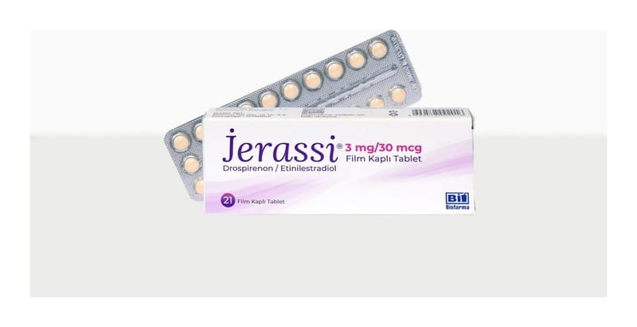

Jerassi 3 mg/30 mcg Film Kaplı Tablet, 63 Adet

Ne için kullanılır
KT · Bölüm 1• JERASSİ, 21 ve 3x21 tabletlik ambalajlarda bulunur. Her bir film kaplı tablet 3 mg drospirenon ve 0,03 mg etinilestradiol içerir. Bu tabletler; açık sarı renkli, yuvarlak, bikonveks şeklindedir. JERASSİ, laktoz monohidrat (sığır sütünden elde edilen) içerir. • Östrojen ve progesteron hormonlarını içeren ve ağız yoluyla alınan doğum kontrol haplarına “Kombine Oral Kontraseptif (KOK)” denir. JERASSİ bu grupta yer alan bir ilaçtır. • JERASSİ, gebeliği önlemek amacıyla kullanılır. Bunun dışında hormonlara bağlı vücutta su tutulması, sivilce ve ciltte yağlanmadan şikayetçi kadınlarda kullanılır.